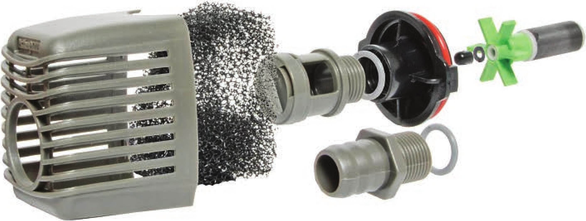
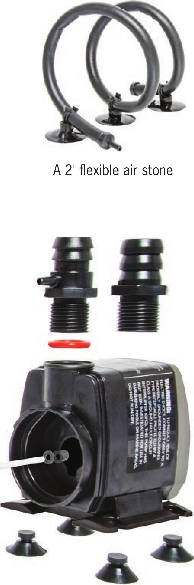

rate. A pump that delivers 600 gallons per hour (GPH) at 4 feet high only delivers 200 GPH at 10 feet high. The number of emitters will also impact flow rate. It is generally better to select a pump that may be slightly overpowered than a pump that could be underpowered. It is possible to reduce flow using valves, but it is not possible to increase flow. Air Pumps Air pumps are primarily used to aerate but they can also be effective for keeping nutrients evenly mixed in a reservoir. Aerating the nutrient solution can increase the dissolved oxygen. Although plants produce oxygen, they also use oxygen to perform a variety of tasks. One of these tasks is moving water through a filtration process in the roots. If a plant does not have adequate oxygen around its roots, then the plant will Two-outlet air pump begin to wilt because it cannot perform the task of moving water through the filtration process and up to the leaves. Increasing oxygen in the root zone often increases crop yield and improves plant health. Adding a check valve between the air pump and the air stone is an inexpensive way to protect your system from a potentially expensive failure. In the event of a pump failure, generally due to a power outage, water may siphon out of the reservoir down through the Va" tubing to the air pump. This can destroy the air pump and flood the area around the pump. Many large pumps have multiple outlet sizes. Small pumps are very useful in DIY hydroponic gardens but they may only have one outlet size, This small pump only connects to 5/i6M tubing. This exploded view of a 400 GPH pump shows the mesh filter, adjustable intake, impeller, suction cups, and two outlet attachments. 20 DIY HYDROPONIC GARDENS

